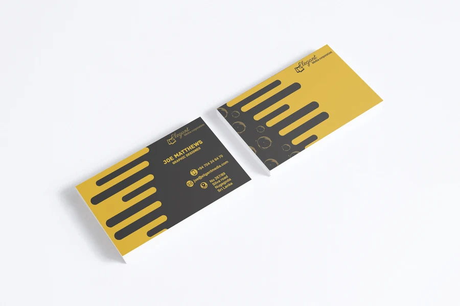
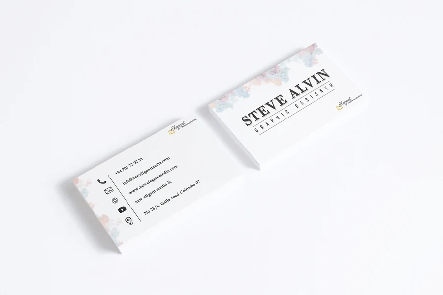
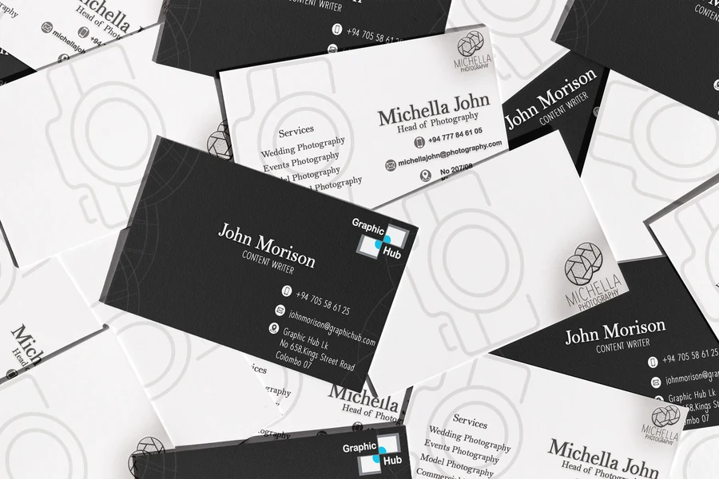
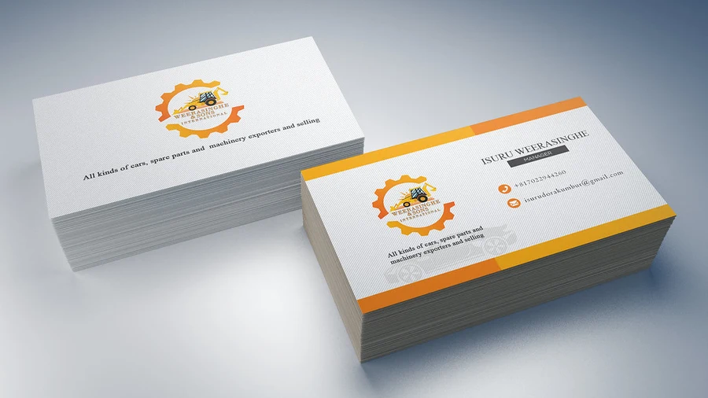
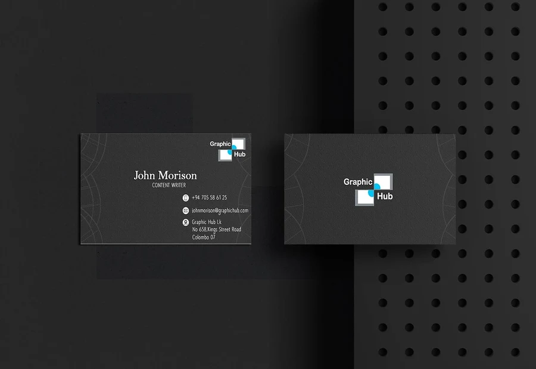
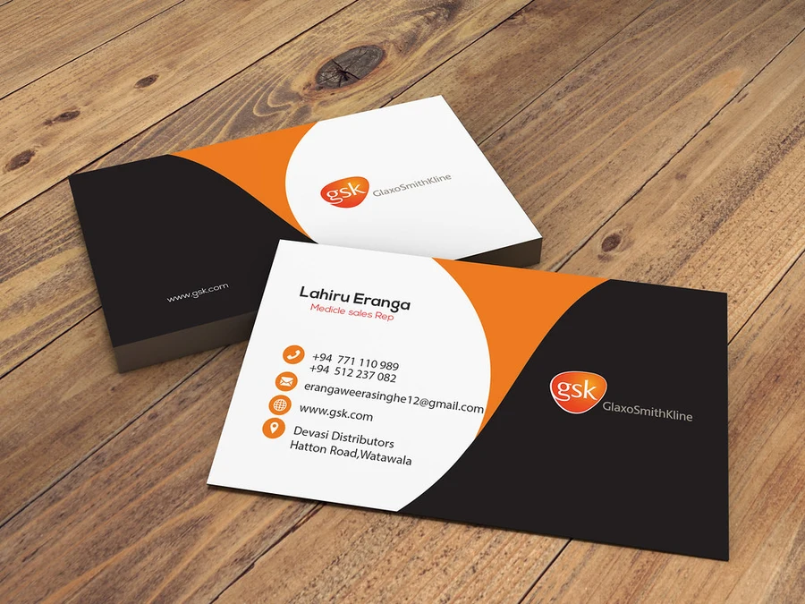

GRAPHIC DESIGN / 06
A small format. A strong impression.
Distinctive approaches to brand and contact information in a compact print format.
Business cards · Visual identityTHE PROJECT
Business card collection
This collection explores business card layouts across a bold geometric style, a restrained typographic treatment, and a black-and-white composition. The mockups show how the designs work as physical printed pieces.
MY DESIGN APPROACH
The designs use scale, contrast, and whitespace to establish a clear order between a person’s name, professional identity, and contact details. Each layout takes a different visual direction while respecting the small format.
DESIGN OBJECTIVE
Make a name, professional identity and contact details legible within a small format.
Objective interpreted from the artwork; original customer brief not supplied.
COLOUR & CONTRAST
Black–white contrast establishes hierarchy, while gold or orange provides a selective accent. Neutral space keeps the contact details from competing with the brand.





